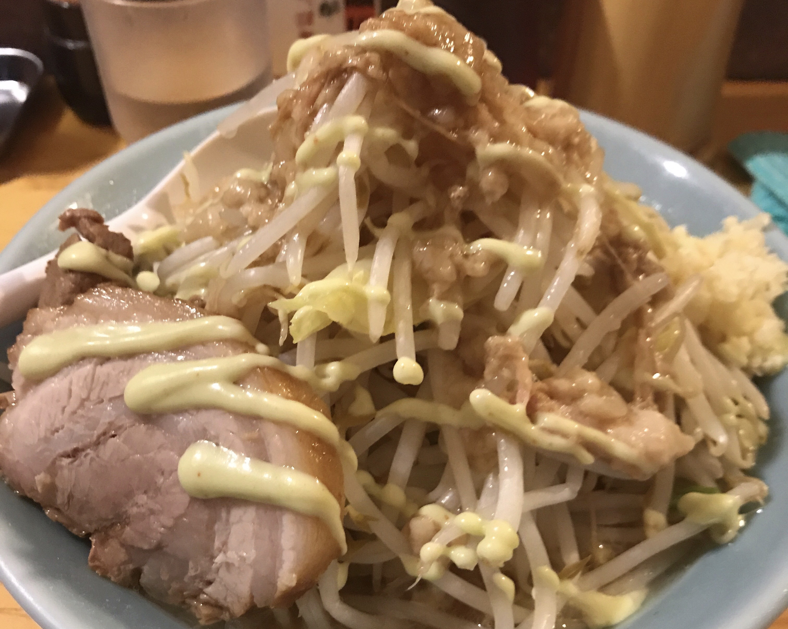

Profile
えんた（本名：遠藤拓也）/ 1994年生まれ / 出身：宮城県石巻市 / 元デザイナー志望のエンジニア
Web サービスを作ったり / LINE Bot 作ったり / プログラミングを教えたり
好きな映画：LUCY、苦手な食べ物：魚卵
3 favorites
Programming
はじめてのプログラミングで作ったものは、「無限ティッシュ」という、いわゆるクソゲーアプリでした。

Food
食べることも、食べものを美味しく撮ることも好きです。Instagram は食べ物専用アカウントです。
Dart
気分転換によくダーツをします。クリケットが好きで、よくネット対戦をしますが、よく負けます。
Links
@enta0701
@endotakuya
@enta0701
Contact